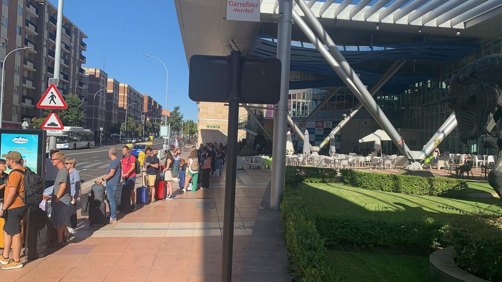

Life, love and purpose. We all seek these in some form as we live our lives. They underpin our daily living and give us direction. In our pursuit of happiness, we can also experience the negative side of our reality such as frustration, fear and anger. We all feel them, and can become worn out by them. When this happpens, we become forced to deal with its impact. Many take periodic vacations to help rebalance into a better headspace. It allows us to refresh ourselves for the next chapter in our journey at home, and at work. This formula for self care is also a formula for success in life. What happens though, when life becomes too much and the one size fits all remedy becomes problematic? 
Everybody has their own reasons to travel. If related to self management and care, the need to wash out the stress of a few months, or even years of hard work can be in the forefront if your mind. It can be a primary goal for a good vacation. The objectives of having fun, learning to love new things, and maybe falling in love with a place, or even a person can take a backseat in your vacation and in your life! Travelling to a vacation spot breaks the familiarity of your home and work environment, which in of itself is a benefit. However, travelling is not without risk, and many make a personal commitment to just do it. This is a common reason to skip evaluating the associated risks of travel. It often works out, but did you ever feel more stressed coming home from a vacation then before you went? There is too much to cover in a definitive answer to that question. Instead, I will offer an opinion that alot of vacation travel, and destination stress can be attributed in part, or as a whole to the following:
The list is extensive, yet not exhaustive. Our ability to address vacation stressers can often be just a matter of making the time to ask yourself if you have considered the questions posed above, before you make your vacation choices. The concept of 'making time' in a hyperconnected world is ever present as a challenge. It extends past vacation planning to other areas of our lives. It is also key to finding peace. To clear your mind in today's world and see your path head on vacation, or any other area of your life is a worthy goal to set. Taking 5 minutes a day to just sit in solitude, closing your eyes and focus on your breathing will help you do this. Coupled with regular sleep, exercise and good food, it allows you the mental fortitude to see everything in your world more clearly, including ways to more affectively answer the above points before your vacation.
Before you book your defacto 'de-stress' vacation to a place you feel will rejuvenate you, start your restful self management via the above pillars of good living. It acts as a wonderful maintainer of your mind throughout the year, and increases your ability to make the right call on how you spend your vacation. When going through dark and troubled times as we all do, these simple lifestyle choices will aid you in maintaining your mind and body. This positively impacts everthing you do, including your vacation planning. So next time you goto plan your vacation, find a peaceful spot for some me time that helps bring calmness to your mind. The results will help you in ways that just get better over time.
The brevity of our lives can be measured not in the stuff we accumulate, but in the influence we have made on others through our thoughts, words and actions. The ability to do good, or evil depends on what type of people we chose to be. Such a serious mandate that comes with our lives deserves every chance of success. With your help, you can be your best influencer through finding calmness. It helps you see everything more clearly including the maximum benefit you can get from your vacation time, and the actualizing peace that comes with it. It becomes a key tool in your toolkit, which allows you to find peace and thus find yourself. There is no greater gift you can recieve, then this gift you can give to yourself.